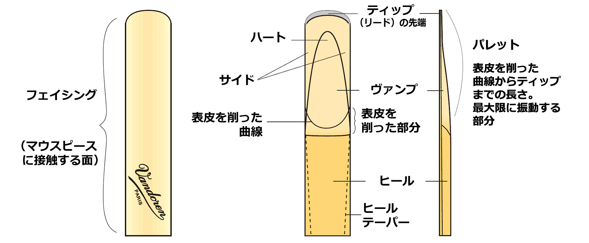

リード
バンドーレン・リード
リード
世界的な演奏家との協力関係とテストを通してさまざまな意見を調査した結果、バンドーレン社はリードの規格を発展させる事ができました。
そして、それにより今日の演奏家たちのさまざまな要求を満足させる事ができました。
6つの保証

1. 精度
各リードの精度を維持するため、リードは精密な電子機器で1枚ずつすべてチェックされています。
各リードの精度を維持するため、リードは精密な電子機器で1枚ずつすべてチェックされています。

2. 保護
損傷を防ぐために1枚ずつプラスティック製のプロテクターで保護されています。
損傷を防ぐために1枚ずつプラスティック製のプロテクターで保護されています。
3. 消費者への保証
個々のリードボックスは、工場出荷後、未開封であることを保証するためにセロハンで封印されています。
個々のリードボックスは、工場出荷後、未開封であることを保証するためにセロハンで封印されています。
4. フローパック ファクトリーフレッシュ
フローパックは、湿度測定で優れた安定性を保証しながら、湿度バリアパッケージで封印されている新しい概念のパッケージです。
フローパックは、湿度測定で優れた安定性を保証しながら、湿度バリアパッケージで封印されている新しい概念のパッケージです。
5. フローパック 50枚入り
このパッケージは特に音楽学校、吹奏楽の需要を満たすようにパックされております。（現在B♭クラリネットとアルト・サクソフォンのみ）
このパッケージは特に音楽学校、吹奏楽の需要を満たすようにパックされております。（現在B♭クラリネットとアルト・サクソフォンのみ）
6. 安心をお届けするセキュリティシール
リードには、野中貿易が取り扱う正規輸入品の証 「VANDOREN ホログラムシール」「NONAKAシール」を貼付しております。
リードには、野中貿易が取り扱う正規輸入品の証 「VANDOREN ホログラムシール」「NONAKAシール」を貼付しております。
リード各部の名称
